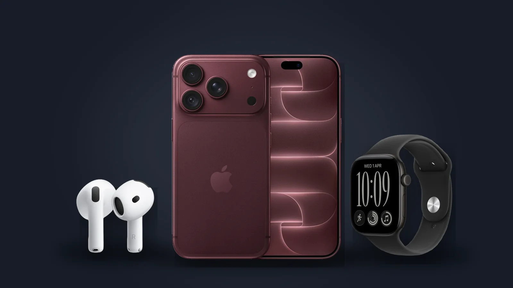

Что Apple показала 9 сентября: iPhone 18 Pro, складной iPhone Duo, новые часы и AirPods 5
Презентация «Surprise and shine» стала первой при новом генеральном директоре Apple Джоне Тернусе. Что показали и сколько это стоит в Армении сегодня.

Новый глава на сцене
Джон Тернус, руководивший разработкой железа Apple, стал генеральным директором 1 сентября, а Тим Кук теперь исполнительный председатель совета директоров. Презентация 9 сентября в Купертино — его первая.
iPhone 18 Pro и iPhone 18 Pro Max
- Чип A20 Pro по 2-нм техпроцессу и новая испарительная камера, которая дольше удерживает производительность.
- Основная камера 48 Мп с переменной диафрагмой от f/1.48 до f/4 — впервые в iPhone.
- Дольше от батареи: Apple заявляет до 36 часов видео для 18 Pro и до 45 для Pro Max.
- Уменьшенный Dynamic Island, который показывает до трёх Live Activities одновременно.
- 2 ТБ памяти теперь и в меньшем Pro, и четыре цвета: burgundy, glacier, silver и black.
В США цены начинаются с $1 199 и $1 299 — на $100 больше, чем год назад. В Армении сегодня: iPhone 18 Pro от 529 000 ֏, iPhone 18 Pro Max от 639 000 ֏.
iPhone Duo — первый складной iPhone
Внешний экран 5,4 дюйма, внутренний — 7,6. В раскрытом виде это самый тонкий iPhone. В США от $1 999, продажи начнутся в октябре; в Армении его пока нет.
Обычного iPhone 18 этой осенью нет
Apple не показала обычный iPhone 18. По данным СМИ, более доступные модели перенесены на весну 2027 года, так что базовой моделью остаётся iPhone 17.
Apple Watch и AirPods
- Apple Watch Series 12 от $399: новая система датчиков здоровья с увеличенными электродами ЭКГ и возвращение керамического корпуса.
- Apple Watch Ultra 4 от $799.
- AirPods 5 от $129: активное шумоподавление в обеих моделях и Live Translation.
В Армении сегодня: Watch Series 12 от 189 000 ֏, Watch Ultra 4 от 359 000 ֏, AirPods 5 от 68 900 ֏.
Источники: Apple Newsroom: iPhone 18 Pro and iPhone 18 Pro Max · Apple Newsroom: iPhone Duo · Apple Newsroom: John Ternus to become CEO · MacRumors: September 9 event · Benzinga: AirPods 5, Watch Series 12 and Ultra 4
24.09.2026